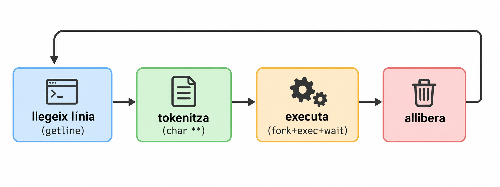
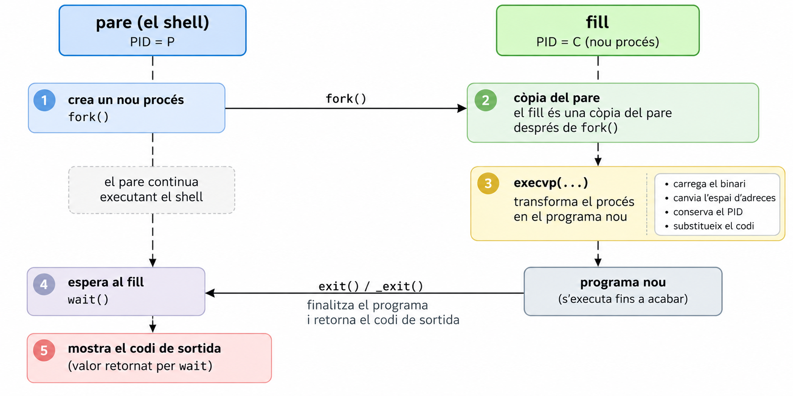

Pralab 05: shell (I): getline(),fork(), wait(), execvp()
Introducció
Cada cop que obres una terminal i escrius ls -l ; pwd, hi ha un programa que fa tot el treball: llegeix la línia, la trosseja, decideix què s’ha d’executar i en quin ordre, crea processos i espera que acabin. Aquest programa és el shell.
Què ha de passar entre que escric una línia i que es veu el resultat?
El cor de qualsevol shell és aquest cicle, i el construirem peça a peça:

gcc. Sistema de referència: Debian bookworm, amb gcc 12.2.- Compila sempre amb
gcc -Wall -Wextra -g -O0. - Extra: Compilar amb
-fsanitize=address,undefinedper a una comprovació més rigorosa. Et dirà a l’instant si tens una fuita o un accés fora de límits. Recorda que és una opció de compilació, no un argument del programa. - Eines de diagnòstic que farem servir:
strace(sudo apt install strace) iman(sudo apt install manpages-dev).
El man és el teu company. Cada cop que apareix una funció nova, la decisió de com usar-la es pren llegint el seu man, no recordant-ho de memòria. Aquestes són les que farem servir (el número és la secció: man 3 getline, man 2 fork). Consulta totes les funcions amb man: getline, strcspn, fork, wait, execvp, perror, _exit
man 3 getlineobre la pàgina. El número és la secció:1ordres del shell,2crides al sistema (fork,wait),3biblioteca de C (printf,strcspn).man printfpot obrir l’ordre de shell i no la funció: per això escrivimman 3 printf.- Es navega amb espai (avança), b (enrere), /text (cerca; n per a la següent coincidència) i q (surt).
- Les pàgines tenen sempre la mateixa estructura. Les que importen: SYNOPSIS (la signatura i quins
#includecalen), DESCRIPTION, RETURN VALUE (què retorna, i com s’indica l’error) i NOTES/ERRORS. - Si no saps com es diu la funció:
man -k paraula(oapropos) cerca per descripció, iman 3 stringllista la família de funcions de cadenes.
Abans de cridar una funció per primera vegada, llegeix SYNOPSIS i RETURN VALUE.
| Part | Què fem | Estat |
|---|---|---|
| A | Llegir una línia amb getline i veure les diferències amb scanf i fgets |
Completa |
| B | Executar una comanda amb fork + execvp + wait |
Completa, amb un error que has de trobar |
| C | Tokenitzar la línia (char **) |
Pendent: el que et falta per fer funcionar ls -l |
Part A · El prompt de la mini-shell (Lectura de línia)
A.1 — Quina funció triem per llegir?
La primera idea que ve al cap és scanf. Anem a posar-la a prova.
Crea main.c:
#include <stdio.h>
int main(void)
{
char buf[64];
printf("> ");
scanf("%s", buf);
printf("llegit: '%s'\n", buf);
printf("> ");
scanf("%s", buf);
printf("llegit: '%s'\n", buf);
return 0;
}Fixa’t que scanf("%s", buf) necessita un buffer per guardar la cadena que l’usuari escriu. En aquest cas, buf té 64 bytes. Aquesta versió únicament permet executar dues instruccions. Una alternativa més elegant seria fer un bucle:
#include <stdio.h>
int main(void)
{
char buf[64];
while (1) {
printf("> ");
scanf("%s", buf);
printf("llegit: '%s'\n", buf);
}
return 0;
}Per compilar i executar:
gcc -o main main.c
./main
# o bé, per fer-ho millor
gcc -Wall -Wextra -g -O0 -fsanitize=address,undefined -o main main.c
./mainEscriu ls -l una sola vegada i observa què passa. Després prova Ctrl-D amb la versió en bucle: què fa? (Pista: mira què retorna scanf quan arriba al final de l’entrada i qui ho comprova.)
Pots veure el raonament
buf conté ls, i el programa no ha esperat que escriguis res al segon scanf: aquest llegeix -l directament, que ja era a l’entrada.
> llegit: 'ls'
> llegit: '-l'%s llegeix una paraula (s’atura al primer espai), i deixa la resta de la línia a l’entrada pendent de ser llegida. Un shell necessita la línia sencera (ls -l, amb espais), perquè en tractar-la nosaltres decidirem què són arguments, operadors, etc.
Amb Ctrl-D, scanf retorna EOF, però el programa no ho comprova: el bucle no s’acaba mai i va imprimint l’últim valor de buf. Un motiu més per no usar scanf sense mirar-ne el valor de retorn.
Queda un problema més greu, que hem d’entendre bé: la mida del buffer.
Si declarem char buf[8] i l’usuari escriu 30 lletres, què fa scanf("%s", buf)? Compila main.c amb -fsanitize=address i comprova-ho:
#include <stdio.h>
int main(void)
{
char buf[8];
scanf("%s", buf);
printf("llegit: '%s'\n", buf);
return 0;
}Pots veure el raonament
AddressSanitizer avorta amb stack-buffer-overflow: scanf ha escrit 31 bytes en un buffer de 8. scanf no té manera de saber de quina mida és buf (només rep l’adreça), així que escriu fins que acaba l’entrada. Sense el sanitizer seria comportament indefinit: podria no fer res visible, fer petar el programa o, pitjor, deixar que algú sobreescrigui la pila amb dades escollides: una vulnerabilitat clàssica.
Es pot limitar amb %7s, però llavors trunquem la comanda sense avisar, i a més seguim llegint només una paraula.
I fgets(buf, sizeof buf, stdin)? Aquesta sí que rep la mida i no es desborda. Prediu què imprimeix aquest programa amb buf[8] si l’entrada és ls -l -a -h + Enter, i després ok + Enter:
#include <stdio.h>
int main(void)
{
char buf[8];
while (fgets(buf, sizeof buf, stdin) != NULL) {
printf("llegit: '%s'\n", buf);
}
return 0;
}Pots veure el raonament
Surten tres lectures per només dues línies:
llegit: 'ls -l -'
llegit: 'a -h
'
llegit: 'ok
'fgets llegeix com a molt mida - 1 caràcters (el darrer lloc és per al '\0'). La línia ls -l -a -h no hi cap i queda partida en dues: el nostre shell veuria les comandes ls -l - i a -h. Per evitar-ho hauríem de detectar si el \n hi és, i continuar llegint en cas contrari: més codi, més errors possibles. I, sigui quina sigui la mida que triem, sempre hi haurà una línia més llarga.
Una cosa més: gets(buf) (sense mida) va ser eliminada de l’estàndard en C11 precisament per ser impossible d’usar amb seguretat.
Anem a la solució que fa servir getline, que llegeix la línia sencera i s’autoajusta a la mida necessària. Fixa’t que en el manual diu que getline retorna el nombre de bytes llegits, i que el buffer és dinàmic: si és massa petit, getline el redimensiona amb realloc. Això vol dir que hem de passar un punter a punter (char **) i un punter a mida (size_t *).
#include <stdio.h>
#include <stdlib.h>
int main(void)
{
char *linia = NULL;
size_t cap = 0;
while (1) {
printf("> ");
ssize_t n = getline(&linia, &cap, stdin);
printf("has escrit: '%s' (%zd bytes llegits)\n", linia, n);
}
free(linia);
return 0;
}A.2 — Treure el salt de línia
getline ens dona "ls -l\n". Si el passéssim tal qual a execvp, buscaria un programa que es digui ls\n. Hem de treure el \n. Tenim tres maneres de fer-ho:
linia[n - 1] = '\0';(el\nés l’últim caràcter, no?)
linia[strcspn(linia, "\n")] = '\0';
- buscar el
\nambstrchri, si no ésNULL, posar-hi un'\0'.
- buscar el
Obre man 3 strcspn. Què fa? Què retorna strcspn("ls -l\n", "\n")? I després pensa en el cas límit: què passa amb (a) i amb (b) si l’última línia de l’entrada no acaba en \n (per exemple, si l’usuari prem Ctrl-D enmig d’una línia, o si fem printf 'pwd\nls' | ./programa)?
Pots veure el raonament
strcspn(s, reject) retorna la longitud del tros inicial de s que no conté cap dels caràcters de reject. Amb "ls -l\n" i "\n" retorna 5: just la posició on hi ha el \n. Si no hi ha cap \n, retorna strlen(s): la posició del '\0'.
Per tant, a (b) sempre escrivim '\0' en una posició vàlida: si hi ha \n, el substitueix; si no n’hi ha, escriu un '\0' damunt d’un altre '\0' (inofensiu).
A (a), en canvi, assumim que el \n hi és, i si no hi és, esborrem l’últim caràcter útil. L’opció (c) també és correcta, però demana un if i una variable més. Escollim (b): una sola línia i sense casos especials.
A.3 — El bucle complet
Crea shell.c:
#include <stdio.h>
#include <stdlib.h>
#include <string.h>
int main(void)
{
char *linia = NULL;
size_t cap = 0;
while (1) {
printf("> ");
ssize_t n = getline(&linia, &cap, stdin);
if (n < 0) {
printf("\n");
break;
}
linia[strcspn(linia, "\n")] = '\0';
printf("has escrit: '%s' (%zd bytes llegits)\n", linia, n);
}
free(linia);
return 0;
}Fixa’t:
n < 0es comprova abans de tocarlinia. Sigetlinefalla (o l’usuari premCtrl-D), no hem de processar res.
També cal tenir en compte que l’usuari necessita una comanda per sortir. Podem fer que escriure q acabi el bucle i anomenarem aquestes comandes built-in (no són programes externs, sinó que el shell les processa ell mateix).
#include <stdio.h>
#include <stdlib.h>
#include <string.h>
#define ACABAR(s) (strcmp((s), "q") == 0)
int main(void)
{
char *linia = NULL;
size_t cap = 0;
while (1) {
printf("> ");
ssize_t n = getline(&linia, &cap, stdin);
if (n < 0) {
printf("\n");
break;
}
linia[strcspn(linia, "\n")] = '\0';
if (ACABAR(linia))
break;
printf("has escrit: '%s' (%zd bytes llegits)\n", linia, n);
}
free(linia);
return 0;
}Per convenció, les macros s’escriuen en MAJÚSCULES (ACABAR). Així es distingeixen d’una funció a simple vista (una macro no es comporta exactament com una funció: per exemple, avalua l’argument tantes vegades com el fa servir) i evitem col·lisions amb noms de la biblioteca estàndard. Si l’haguéssim anomenat exit, estaríem redefinint una funció de <stdlib.h>, cosa que és comportament indefinit.
Aquesta solució encara no és perfecta: si l’usuari escriu q amb espais, tabuladors,… al davant o al darrere (" q", "q ", " q "), el shell no surt. Mes endavant veurem com tokenitzar la línia i detectar millor les built-in.
Part B — Executar una comanda
Ja sabem llegir una línia. Ara toca fer que el programa executi el que l’usuari escriu. En Unix això no es fa amb una sola crida: es fa amb tres peces que cooperen.

B.1 —fork
Sense compilar-lo, prediu què imprimeix aquest programa i quantes vegades apareix cada línia. Després compila’l i comprova-ho.
#include <stdio.h>
#include <unistd.h>
int main(void)
{
printf("abans del fork\n");
pid_t pid = fork();
if (pid == 0) {
printf("soc el fill\n");
} else {
printf("soc el pare, el fill es diu %d\n", pid);
}
printf("fi (pid %d)\n", getpid());
return 0;
}Pots veure el raonament
abans del fork surt una sola vegada (només el pare existia en aquell moment). Les línies posteriors al fork les executen els dos processos, així que fi (pid ...) surt dues vegades. L’ordre entre pare i fill no està garantit: depèn del planificador.
abans del fork
soc el pare, el fill es diu 4312
soc el fill
fi (pid 4311)
fi (pid 4312)B.2 — Esperar el fill i llegir com ha acabat
Sense wait, el pare pot continuar (i tornar a mostrar el prompt) abans que el fill acabi, i el fill queda com a zombie quan acaba. Per això el pare ha d’esperar.
Llegeix man 2 wait, apartats SYNOPSIS, DESCRIPTION (les macros WIFEXITED, WEXITSTATUS, WIFSIGNALED, WTERMSIG) i RETURN VALUE.
pid_t pid = fork();
if (pid == 0) {
/* codi del fill */
} else {
int status;
wait(&status);
if (WIFEXITED(status)) {
printf("codi: %d\n", WEXITSTATUS(status));
}
}statusno és directament el codi de sortida. Què és? Per què calWEXITSTATUS?- Quan és
WIFEXITED(status)fals? Dona un exemple de programa que ho provoqui. - Quin codi de sortida diries que usa el shell quan una comanda no existeix? Comprova-ho al teu shell real:
no_existeix; echo $?
Pots veure el raonament
statusempaqueta diversa informació en un sol enter: si el procés ha sortit ambexito l’ha matat un senyal, el codi de sortida, el senyal… Les macros desempaqueten cada part. Imprimirstatusdirectament dona valors com256per a unexit(1).- Quan el procés no ha acabat amb
exit, sinó mort per un senyal. Per exemple, un programa que faciraise(SIGSEGV);(amb#include <signal.h>) acaba ambSIGSEGV. Llavors s’ha d’usarWIFSIGNALEDiWTERMSIG. (Evita*(int *)0 = 1;per provar-ho: és comportament indefinit i, amb optimitzacions, el compilador pot eliminar-lo.) - 127, per convenció (command not found). Per això el fill de la nostra
executafarà_exit(127)siexecvpfalla.
B.3 — Llegim execvp
Aquesta és la crida on és més fàcil equivocar-se, i tota la informació és al man.
Obre man 3 execvp i respon:
- Quina és la signatura? Quin és el tipus del segon paràmetre?
- Què fa la
pdel nom? I lav? - Què cal complir obligatòriament amb l’array d’arguments? Busca-ho a la descripció: The array of pointers must be terminated by…
- Quin ha de ser
argv[0]? - Què retorna si va bé? I si falla?
Pots veure el raonament
int execvp(const char *file, char *const argv[]);: el segon és un array de punters a cadena (char **).p: busca l’executable als directoris delPATH(per això podem escriurelsi no/usr/bin/ls).v: els arguments es passen en un vector (array), per oposició aexeclp, que els rep com a llista de paràmetres.- L’array ha d’acabar amb un punter
NULL. És comexecvpsap quants arguments hi ha: no rep cap longitud. - El nom del programa (el mateix que
file). La resta d’elements són els arguments. - Si va bé, no retorna mai: el codi després de la crida ja no existeix. Si retorna, sempre és
-1(ierrnoindica la causa). Per això el codi que segueix unexecvpés únicament el tractament de l’error.
Exemple correcte, escrit a mà:
char *args[] = { "ls", "-l", NULL };
execvp(args[0], args);B.4 — La funció executa
int executa(char **argv)
{
pid_t pid = fork();
if (pid < 0) {
perror("fork");
return -1;
}
if (pid == 0) {
execvp(argv[0], argv);
perror(argv[0]);
_exit(127);
}
int status;
wait(&status);
if (WIFEXITED(status)) {
return WEXITSTATUS(status);
}
return 128 + WTERMSIG(status);
}Fixa’t en els detalls (cadascun és una decisió que s’ha pres llegint el man):
| Detall | Per què |
|---|---|
if (pid < 0) amb perror("fork") |
fork pot fallar (sense memòria, límit de processos). El shell ha de seguir viu, no fer exit. |
Després d’execvp, només perror + _exit(127) |
Si arribem aquí, execvp ha fallat. No hem de continuar executant el codi del shell dins del fill! |
_exit i no exit al fill |
exit buida els buffers de stdio heretats del pare; _exit no |
128 + WTERMSIG(status) |
Convenció del shell per a un procés mort per senyal (p. ex. 139 = SIGSEGV). |
wait(&status) + macros |
wait retorna el PID del fill i omple status; és executa qui el desempaqueta (WEXITSTATUS, WTERMSIG) i retorna el codi, de manera que el pare (el bucle del shell) podrà decidir què fer amb ell. |
B.5 — Primera versió de la mini-shell
Aquest és el punt on vam deixar la sessió. Funciona a mitges. :)
#include <stdio.h>
#include <string.h>
#include <sys/types.h>
#include <sys/wait.h>
#include <unistd.h>
#include <stdlib.h>
#define ACABAR(s) (strcmp((s), "q") == 0)
int executa(char **argv);
int main(void)
{
char *linia = NULL;
size_t cap = 0;
while (1) {
printf("> ");
ssize_t n = getline(&linia, &cap, stdin);
if (n < 0) {
printf("\n");
break;
}
linia[strcspn(linia, "\n")] = '\0';
printf("has escrit: '%s' (%zd bytes llegits)\n", linia, n);
if (ACABAR(linia))
break;
executa(&linia);
}
free(linia);
return 0;
}
int executa(char **argv)
{
pid_t pid = fork();
if (pid < 0) {
perror("fork");
return -1;
}
if (pid == 0) {
execvp(argv[0], argv);
perror(argv[0]);
_exit(127);
}
int status;
wait(&status);
if (WIFEXITED(status)) {
return WEXITSTATUS(status);
}
return 128 + WTERMSIG(status);
}Compila’l i prova tres coses:
gcc -Wall -Wextra -g -O0 -fsanitize=address,undefined -o shell shell.c
./shell
> ls
> ls -l
> qExercici 1: troba l’error.
Segurament has vist això en escriure ls:
> ls
has escrit: 'ls' (3 bytes llegits)
ls: Bad addressQuè vol dir
Bad address? Quinerrnoés? (man 3 errno, buscaEFAULT.)Per què
execvprep una adreça dolenta? Mira de quin tipus és el que li passem com aargvi què hi ha a continuació a la memòria. (Pista: repassa la resposta 3 de B.3.) Fixa’t que ni-Wallni-Wextrat’han avisat de res: el tipuschar **és correcte per al compilador, i l’error només es veu en execució.Fes servir
straceper veure-ho amb els teus ulls:strace -f -e trace=execve ./shellQuè hi ha dins l’array que rep
execve? Com acaba la crida?Passa a un altre problema: si ho arregles de la manera més ràpida possible (un array de dos elements),
lsfuncionarà… peròls -l? Per què no? Què caldrà fer amb la línia?